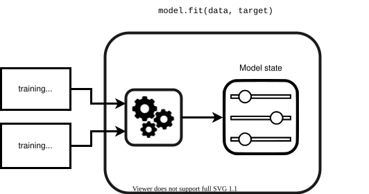
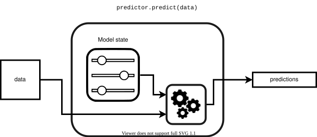
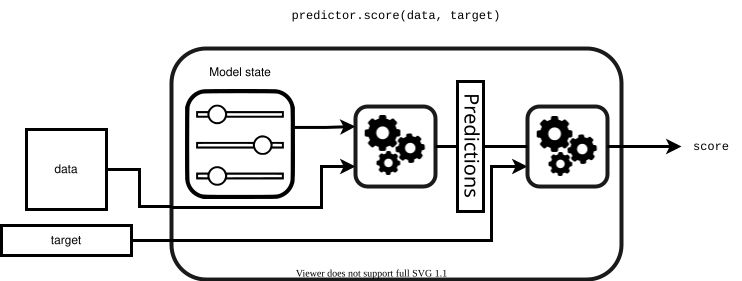

First model with scikit-learn#
In this notebook, we present how to build predictive models on tabular datasets, with only numerical features.
In particular we highlight:
the scikit-learn API:
.fit(X, y)/.predict(X)/.score(X, y);how to evaluate the generalization performance of a model with a train-test split.
Here API stands for “Application Programming Interface” and refers to a set of conventions to build self-consistent software. Notice that you can visit the Glossary for more info on technical jargon.
Loading the dataset with Pandas#
We use the “adult_census” dataset described in the previous notebook. For more details about the dataset see http://www.openml.org/d/1590.
Numerical data is the most natural type of data used in machine learning and can (almost) directly be fed into predictive models. Here we load a subset of the original data with only the numerical columns.
import pandas as pd
adult_census = pd.read_csv("../datasets/adult-census-numeric.csv")
Let’s have a look at the first records of this dataframe:
adult_census
| age | capital-gain | capital-loss | hours-per-week | class | |
|---|---|---|---|---|---|
| 0 | 41 | 0 | 0 | 92 | <=50K |
| 1 | 48 | 0 | 0 | 40 | <=50K |
| 2 | 60 | 0 | 0 | 25 | <=50K |
| 3 | 37 | 0 | 0 | 45 | <=50K |
| 4 | 73 | 3273 | 0 | 40 | <=50K |
| ... | ... | ... | ... | ... | ... |
| 39068 | 45 | 0 | 0 | 40 | <=50K |
| 39069 | 47 | 0 | 0 | 60 | <=50K |
| 39070 | 29 | 0 | 1485 | 60 | >50K |
| 39071 | 29 | 0 | 0 | 40 | <=50K |
| 39072 | 46 | 15024 | 0 | 55 | >50K |
39073 rows × 5 columns
We see that this CSV file contains all information: the target that we would
like to predict (i.e. "class") and the data that we want to use to train our
predictive model (i.e. the remaining columns). The first step is to separate
columns to get on one side the target and on the other side the data.
Separate the data and the target#
target_name = "class"
target = adult_census[target_name]
target
0 <=50K
1 <=50K
2 <=50K
3 <=50K
4 <=50K
...
39068 <=50K
39069 <=50K
39070 >50K
39071 <=50K
39072 >50K
Name: class, Length: 39073, dtype: str
data = adult_census.drop(columns=[target_name])
data
| age | capital-gain | capital-loss | hours-per-week | |
|---|---|---|---|---|
| 0 | 41 | 0 | 0 | 92 |
| 1 | 48 | 0 | 0 | 40 |
| 2 | 60 | 0 | 0 | 25 |
| 3 | 37 | 0 | 0 | 45 |
| 4 | 73 | 3273 | 0 | 40 |
| ... | ... | ... | ... | ... |
| 39068 | 45 | 0 | 0 | 40 |
| 39069 | 47 | 0 | 0 | 60 |
| 39070 | 29 | 0 | 1485 | 60 |
| 39071 | 29 | 0 | 0 | 40 |
| 39072 | 46 | 15024 | 0 | 55 |
39073 rows × 4 columns
We can now focus on the variables, also denominated features, that we later use to build our predictive model. In addition, we can also check how many samples are available in our dataset.
data.columns
Index(['age', 'capital-gain', 'capital-loss', 'hours-per-week'], dtype='str')
print(
f"The dataset contains {data.shape[0]} samples and "
f"{data.shape[1]} features"
)
The dataset contains 39073 samples and 4 features
Fit a model and make predictions#
We now build a classification model using the “K-nearest neighbors” strategy.
To predict the target of a new sample, a k-nearest neighbors takes into
account its k closest samples in the training set and predicts the majority
target of these samples.
Caution
We use a K-nearest neighbors here. However, be aware that it is seldom useful in practice. We use it because it is an intuitive algorithm. In the next notebook, we will introduce better models.
The fit method is called to train the model from the input (features) and
target data.
from sklearn.neighbors import KNeighborsClassifier
model = KNeighborsClassifier()
_ = model.fit(data, target)
Learning can be represented as follows:

In scikit-learn an object that has a fit method is called an estimator.
If the estimator additionally has :
a
predictmethod, it is called a predictor. Examples of predictors are classifiers or regressors.a
transformmethod, it is called a transformer. Examples of transformers are scalers or encoders. We will see more about transformers in the next notebook.
The method fit is composed of two elements: (i) a learning algorithm and
(ii) some model states. The learning algorithm takes the training data and
training target as input and sets the model states. These model states are
later used to either predict or transform data as explained above. See the
glossary for more detailed definitions.
Both the learning algorithm and the type of model states are specific to each type of model.
Note
Here and later, we use the name data and target to be explicit. In
scikit-learn documentation, data is commonly named X and target is
commonly called y.
Let’s use our model to make some predictions using the same dataset.
target_predicted = model.predict(data)
We can illustrate the prediction mechanism as follows:

To predict, a model uses a prediction function that uses the input data together with the model states. As for the learning algorithm and the model states, the prediction function is specific for each type of model.
Let’s now have a look at the computed predictions. For the sake of simplicity, we look at the five first predicted targets.
target_predicted[:5]
array([' >50K', ' <=50K', ' <=50K', ' <=50K', ' <=50K'], dtype=object)
Indeed, we can compare these predictions to the actual data…
target[:5]
0 <=50K
1 <=50K
2 <=50K
3 <=50K
4 <=50K
Name: class, dtype: str
…and we could even check if the predictions agree with the real targets:
target[:5] == target_predicted[:5]
0 False
1 True
2 True
3 True
4 True
Name: class, dtype: bool
print(
"Number of correct prediction: "
f"{(target[:5] == target_predicted[:5]).sum()} / 5"
)
Number of correct prediction: 4 / 5
Here, we see that our model makes a mistake when predicting for the first sample.
To get a better assessment, we can compute the average success rate.
(target == target_predicted).mean()
np.float64(0.8242776341719346)
This result means that the model makes a correct prediction for approximately 82 samples out of 100. Note that we used the same data to train and evaluate our model. Can this evaluation be trusted or is it too good to be true?
Train-test data split#
When building a machine learning model, it is important to evaluate the trained model on data that was not used to fit it, as generalization is more than memorization (meaning we want a rule that generalizes to new data, without comparing to data we memorized). It is harder to conclude on never-seen instances than on already seen ones.
Correct evaluation is easily done by leaving out a subset of the data when training the model and using it afterwards for model evaluation. The data used to fit a model is called training data while the data used to assess a model is called testing data.
We can load more data, which was actually left-out from the original data set.
adult_census_test = pd.read_csv("../datasets/adult-census-numeric-test.csv")
From this new data, we separate our input features and the target to predict, as in the beginning of this notebook.
target_test = adult_census_test[target_name]
data_test = adult_census_test.drop(columns=[target_name])
We can check the number of features and samples available in this new set.
print(
f"The testing dataset contains {data_test.shape[0]} samples and "
f"{data_test.shape[1]} features"
)
The testing dataset contains 9769 samples and 4 features
Instead of computing the prediction and manually computing the average success
rate, we can use the method score. When dealing with classifiers this method
returns their performance metric.
accuracy = model.score(data_test, target_test)
model_name = model.__class__.__name__
print(f"The test accuracy using a {model_name} is {accuracy:.3f}")
The test accuracy using a KNeighborsClassifier is 0.804
We use the generic term model for objects whose goodness of fit can be
measured using the score method. Let’s check the underlying mechanism when
calling score:

To compute the score, the predictor first computes the predictions (using the
predict method) and then uses a scoring function to compare the true target
y and the predictions. Finally, the score is returned.
If we compare with the accuracy obtained by wrongly evaluating the model on the training set, we find that this evaluation was indeed optimistic compared to the score obtained on a held-out test set.
It shows the importance to always testing the generalization performance of predictive models on a different set than the one used to train these models. We will discuss later in more detail how predictive models should be evaluated.
Note
In this MOOC, we refer to generalization performance of a model when referring to the test score or test error obtained by comparing the prediction of a model and the true targets. Equivalent terms for generalization performance are predictive performance and statistical performance. We refer to computational performance of a predictive model when assessing the computational costs of training a predictive model or using it to make predictions.
Notebook Recap#
In this notebook we:
fitted a k-nearest neighbors model on a training dataset;
evaluated its generalization performance on the testing data;
introduced the scikit-learn API
.fit(X, y)(to train a model),.predict(X)(to make predictions) and.score(X, y)(to evaluate a model);introduced the jargon for estimator, predictor and model.